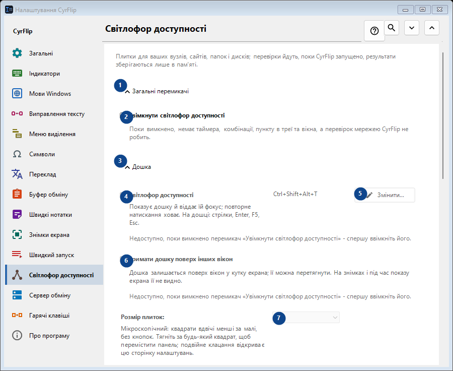
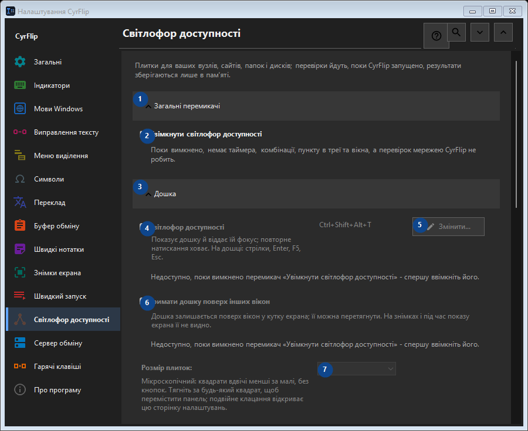

Світлофор доступності
Для чого це вікно
Плитки для ваших вузлів, сайтів, папок і дисків; перевірки йдуть, поки CyrFlip запущено, результати зберігаються лише в пам'яті.


Порядок дій
Налаштування застосовуються одразу. Обов’язкового порядку немає; користуйтеся групами нижче.
Елементи
1. Загальні перемикачі
Скористайтеся командою, коли потрібна вказана дія. Прочитайте запит підтвердження перед згодою.
Ваші сполучення клавіш2. Увімкнути світлофор доступності
Поки вимкнено, немає таймера, комбінації, пункту в треї та вікна, а перевірок мережею CyrFlip не робить.
Ваші сполучення клавіш3. Дошка
Скористайтеся командою, коли потрібна вказана дія. Прочитайте запит підтвердження перед згодою.
Ваші сполучення клавіш4. Світлофор доступності
Недоступно, поки вимкнено перемикач «Увімкнути світлофор доступності» - спершу ввімкніть його. Елемент зараз недоступний. Спочатку ввімкніть функцію або виберіть запис.
Ваші сполучення клавіш5. Змінити - Світлофор доступності
Недоступно, поки вимкнено перемикач «Увімкнути світлофор доступності» - спершу ввімкніть його. Елемент зараз недоступний. Спочатку ввімкніть функцію або виберіть запис.
Ваші сполучення клавіш6. Тримати дошку поверх інших вікон
Недоступно, поки вимкнено перемикач «Увімкнути світлофор доступності» - спершу ввімкніть його. Елемент зараз недоступний. Спочатку ввімкніть функцію або виберіть запис.
Ваші сполучення клавіш7. Розмір плиток
Недоступно, поки вимкнено перемикач «Увімкнути світлофор доступності» - спершу ввімкніть його. Елемент зараз недоступний. Спочатку ввімкніть функцію або виберіть запис.
Ваші сполучення клавіш8. Стовпців
Недоступно, поки вимкнено перемикач «Увімкнути світлофор доступності» - спершу ввімкніть його. Елемент зараз недоступний. Спочатку ввімкніть функцію або виберіть запис.
Ваші сполучення клавіш9. Недоступно, поки вимкнено перемикач «Увімкнути світлофор доступності» - спершу ввімкніть його.
Виберіть або введіть значення для сусіднього підпису. Перевірте його перед продовженням. Елемент зараз недоступний. Спочатку ввімкніть функцію або виберіть запис.
Ваші сполучення клавіш10. Прозорість вікна світофора
Недоступно, поки вимкнено перемикач «Увімкнути світлофор доступності» - спершу ввімкніть його. Елемент зараз недоступний. Спочатку ввімкніть функцію або виберіть запис.
Ваші сполучення клавіш11. Показати дошку
Недоступно, поки вимкнено перемикач «Увімкнути світлофор доступності» - спершу ввімкніть його. Елемент зараз недоступний. Спочатку ввімкніть функцію або виберіть запис.
Ваші сполучення клавіш12. Цілі
Скористайтеся командою, коли потрібна вказана дія. Прочитайте запит підтвердження перед згодою.
Ваші сполучення клавіш13. Адреса
Недоступно, поки вимкнено перемикач «Увімкнути світлофор доступності» - спершу ввімкніть його. Елемент зараз недоступний. Спочатку ввімкніть функцію або виберіть запис.
Ваші сполучення клавіш14. Додати
Недоступно, поки вимкнено перемикач «Увімкнути світлофор доступності» - спершу ввімкніть його. Елемент зараз недоступний. Спочатку ввімкніть функцію або виберіть запис.
Ваші сполучення клавіш15. Докладно...
Недоступно, поки вимкнено перемикач «Увімкнути світлофор доступності» - спершу ввімкніть його. Елемент зараз недоступний. Спочатку ввімкніть функцію або виберіть запис.
Ваші сполучення клавіш16. Перевірити все зараз
Недоступно, поки вимкнено перемикач «Увімкнути світлофор доступності» - спершу ввімкніть його. Елемент зараз недоступний. Спочатку ввімкніть функцію або виберіть запис.
Ваші сполучення клавіш17. Журнал змін
Скористайтеся командою, коли потрібна вказана дія. Прочитайте запит підтвердження перед згодою.
Ваші сполучення клавіш18. Відкрити файл журналу
Недоступно, поки вимкнено перемикач «Увімкнути світлофор доступності» - спершу ввімкніть його. Елемент зараз недоступний. Спочатку ввімкніть функцію або виберіть запис.
Ваші сполучення клавіш19. Показати в папці
Недоступно, поки вимкнено перемикач «Увімкнути світлофор доступності» - спершу ввімкніть його. Елемент зараз недоступний. Спочатку ввімкніть функцію або виберіть запис.
Ваші сполучення клавіш20. Очистити журнал...
Недоступно, поки вимкнено перемикач «Увімкнути світлофор доступності» - спершу ввімкніть його. Елемент зараз недоступний. Спочатку ввімкніть функцію або виберіть запис.
Ваші сполучення клавіш